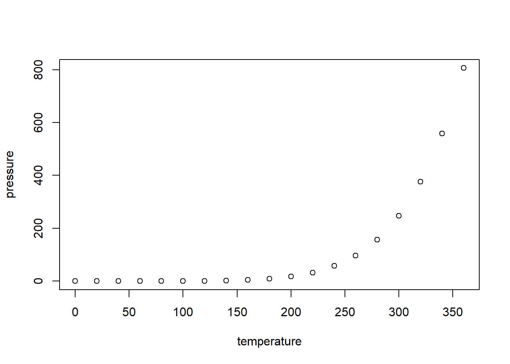

Chapter 7 탐색적 데이터 분석
탐색적 데이터 분석은 데이터를 요약하고 시각적 표현을 통해서 알아가는 방법입니다. 탐색적 분석의 중요한 부분이 안-지도적 학습인데 unsupervised learning, 이것은 의미있는 하위집단 분류와 패턴을 찾는 여러 방법의 집합체를 통칭합니다. 통계적 추론,즉 가설을 검증하는 접근법과 달리, 이것은 가설을 만들어내는 과정입니다. 물론 이 가설도 나중에 새 데이터에 의해서 검증을 받아야합니다. 탐색적 분석의 또다른 목적은 극단적 사례와 부정확한 자료를 찾아내어 좀더 효율적인 데이터셋을 구축하는 겁니다. 데이터의 통계적 요약과 그래프 작성을 통해서 탐색적 분석을 해봅니다. (탐색적 분석은 unsupervised learning 과 연관이 있습니다.)
7.1 R Markdown으로 보고서 작성
R Markdown은 R을 이용해서 깔끔하게 정리된 문서를 만듭니다. 이 문서는 여러 형태로 output을 출력할 수 있습니다. 예를 들면, HTML, MS 워드, pdf 등의 형태로. R Markdown으로 만든 보고서가 바람직한 이유는 나중에 새 데이터를 이용해서 보고서를 만들 때 기존 보고서를 거의 그대로 사용할 수 있다는 점이죠. 그래프나 표 등을 R Markdown 안에서 형성하기 때문에 데이터만 바꾸면 새 보고서가 만들어집니다. 물론 작성하기 편하다는 것이 가장 좋은 점이지만.
R Markdown 문서는 다양한 그래프를 그리기 쉽기 때문에 탐색적 분석에 매우 적합합니다. 그래서 이 장에서는 R Markdown을 이용해 보고서를 만드는 법을 배울 겁니다. 물론 이 방법으로 과제도 제출할 겁니다
7.1.1 시작하기
새 R Markdown 문서를 만드는 가장 편한 방법이 RStudio를 이용하는 겁니다. RStudio를 열고 File > New > File > R Markdown 을 차례로 클릭하면 아래의 내용을 담은 새 문서를 가져옵니다.
---
title: "Untitled"
author: "author"
date: "2023-02-20"
output: html_document
---
knitr::opts_chunk$set(echo = TRUE)
## R Markdown
This is an R Markdown document. Markdown is a simple formatting syntax for authoring HTML, PDF, and MS Word
documents. For more details on using R Markdown see <http://rmarkdown.rstudio.com>.
When you click the **Knit** button a document will be generated that includes both content as well as the
output of any embedded R code chunks within the document. You can embed an R code chunk like this:
summary(cars)
## Including Plots
You can also embed plots, for example:
plot(pressure)
Note that the `echo = FALSE` parameter was added to the code chunk to prevent printing of
the R code that generated the plot.스크립트 패널 가운데 위의 Knit 버튼을 클릭하면 이 Markdown 파일을 이용한 html 문서를 제작합니다. 이 html 문서는 그걸 만든 Markdown 문서와 같은 폴더에 저장됩니다. html 문서는 바로 인터넷 페이지로 이용할 수 있습니다.
맨 위에 위아래로 — 두 개가 둘러싼 부분이 YAML header입니다. 이 부분은 문서 제작과 문서가 나중에 html이나 pdf 등으로 변환되는 과정에 관한 정보를 담고 있습니다. 지금 여기 새 문서에서는 기본적인 정보만 포함해서 간단한 형태로 나타났습니다.
---
title: "Untitled"
author: "Måns Thulin"
date: "10/20/2020"
output: html_document
---output: html_document 는 Knit 를 누르면 HTML 파일을 제작하는 명령입니다. 이것은 output: word_document나 output: pdf_document로 교체해도 됩니다. R markdown 파일이 이런 파일들로 바뀔려면 LaTex 가 필요한데, 이미 RStudio가 설치했거나 나중에 설치하면 됩니다.
아래의 부분은 코드 청크라고 code chunk 부릅니다. 코드 뭉치인데 R code를 실행하고 결과를 최종 output에, 즉 html이나 pdf 형태의 출력물에 나타나게 합니다. 오른쪽 삼각 플레이 단추를 누르면 그 부분의 코드를 실행합니다. 지금 아래의 코드는 Knit 단추를 누를 때 실행하는 옵션을 결정하는 겁니다. r은 R 코드라는 의미이고 setup 은 이 청크의 이름인데, 한 문서에서 같은 청크 이름이 두 개 있으면 안 됩니다.
```{r setup, include=FALSE}
knitr::opts_chunk$set(echo = TRUE)
```아래의 부분이 기본적 텍스트 내용입니다. ## 가 두 있으면 2단계 제목을 의미합니다. 나중에 Knit 를 누르면 자동으로 번호가 붙습니다.
## R Markdown
This is an R Markdown document. Markdown is a simple formatting syntax
for authoring HTML, PDF, and MS Word documents. For more details on
using R Markdown see
<http://rmarkdown.rstudio.com>.< > 는 하이퍼링크를 연결해줍니다.
7.1.2 텍스트 포맷
코드가 아닌 일반 텍스트를 넣으려면 그냥 타이프 치면 되지만 글자 형태를 다르게 하려면 일정한 규칙을 따라야 합니다.
_이탤릭체_ 또는 *이탤릭체*: 글자를 기울게 만든다**볼드** 또는 **볼드**: 글자를 굵게 만든다[하이터텍스트](https://www.github.com): 하이퍼텍스트를 만든다`code`: 문서의 일반 문장 안에code를 넣는다.$a^2 + b ^ 2 = c^2$: 문장 안에 수학 방정식을 LaTEx 를 이용해서 이처럼 \(a^2 + b ^ 2 = c^2\) 넣는다$$a^2 + b ^ 2 = c^2$$: 새 줄을 만들어 그 중앙에 수학 방정식을 넣는다 \[a^2 + b ^ 2 = c^2\]
# 를 이용해서 제목과 소제목의 수준을 결정합니다.
# 제목
## 소제목
### 그 아래 소제목
...등등 계속.7.1.3 리스트, 표, 그림
글머리 기호와 들여쓰기를 자동으로 하는 걸 list 라고 합니다.
* 하나 1
* 하나 2
+ 아래하나 1
+ 아래하나 2
* 하나 3- 하나 1
- 하나 2
- 아래하나 1
- 아래하나 2
- 하나 3
글머리 번호를 붙이려면,
1 하나 1
1 하나 2
i) 아래하나 1
ii) 아래하나 2
1 하나 3첫 머리에 숫자만 붙으면 번호가 달라도 알아서 번호를 답니다.
1 하나 1
2 하나 2
아래하나 1
아래하나 2
3 하나 3
표를 만들려면 | 와 --------- 를 씁니다. 좀 엉성하게 넣어도
제목 1 | 제목 2
------- | -------
내용 1 | 내용 4
내용 2 | 내용 5
내용 3 | 내용 6깔끔한 표를 그려줍니다.
| 제목 1 | 제목 2 |
|---|---|
| 내용 1 | 내용 4 |
| 내용 2 | 내용 5 |
| 내용 3 | 내용 6 |
그림을 넣으려면,


그림의 캡션을 여기에 넣는다
7.1.4 코드 청크
간단한 코드 청크는 이런 형태에요.
```{r}
plot(pressure)
```RStudio에서는 Ctrl+Alt+I 를 누르면 코드 청크가 생성합니다.
코드 청크에 이름을 붙일 수 있고, 캡션을 붙여 나중에 자동으로 번호 붙이고 링크할 수 있습니다.
```{r pressureplot, fig.cap = "Plot of the pressure data."}
plot(pressure)
```
As we can see in Figure \@ref(fig:pressureplot), the relationship
between temperature and pressure resembles a banana.이렇게 나옵니다.

Figure 7.1: Plot of the pressure data.
As we can see in Figure 7.1, the relationship between temperature and pressure resembles a banana.
청크 헤더에 아래처럼 조건을 붙일 수 있습니다.
```{r, eval = FALSE}
plot(pressure)
```이와 같은 것들이 있습니다.
echo = FALSE: 코드를 실행하지만 코드를 output에 넣지 않는다eval = FALSE: 코드를 실행하지 않지만 코드를 output에 넣는다result = "hide"문자로 된 실행 결과물을 output에 안 넣는다.fig.show = "hide": 그래프를 output에 안 넣는다warning = FALSE: 경고 메시지를 output에 안 넣는다message = FALSE: 다른 메시지를 output에 안 넣는다include = FALSE: 코드를 실행하지만 코드나 결과를 output에 안 넣는다error = TRUE: 청크에서 에러가 나도 R Markdown 문서를 계속 실행한다collapse = TRUE: 청크 안의 각 코드 실행 결과를 나누지 않고 한 곳으로 몰아 output에 출력한다
7.2 ggplot2 그래프를 보기 좋게
ggplot2 를 수준 높게 이용해서 그래프를 보기 좋게 그립니다.
7.2.1 테마 이용
예전에 2.7.4 섹션에서 그렸던 그래프를 다시 봅니다. 그 아래에 테마를 붙여 그래프를 발전시킵니다. 아래 일곱 개는 각각 그래프를 그립니다.
library(ggplot2)
p <- ggplot(msleep, aes(brainwt, sleep_total, colour = vore)) +
geom_point() +
xlab("Brain weight (logarithmic scale)") +
ylab("Total sleep time") +
scale_x_log10() +
facet_wrap(~ vore)
# Create plot with different themes:
p + theme_grey() # The default theme
p + theme_bw()
p + theme_linedraw()
p + theme_light()
p + theme_dark()
p + theme_minimal()
p + theme_classic()추가하면 그래프를 그릴 때 좋은 패키지가 몇 개 있습니다. 설치해볼까요? 설치하고 세 개씩 테마를 꺼내어 적용해 그래프를 그려봅니다. p 그래프가 여전히 환경에 있어야 그릴 수 있습니다.
install.packages("ggthemes")
library(ggthemes)
# Create plot with different themes from ggthemes:
p + theme_tufte() # Minimalist Tufte theme
p + theme_wsj() # Wall Street Journal
p + theme_solarized() + scale_colour_solarized() # Solarized colours
##############################
install.packages("hrbrthemes")
library(hrbrthemes)
# Create plot with different themes from hrbrthemes:
p + theme_ipsum() # Ipsum theme
p + theme_ft_rc() # Suitable for use with dark RStudio themes
p + theme_modern_rc() # Suitable for use with dark RStudio themes7.2.2 칼라 팔레트
배경색 같은 것과는 달리, 칼라 팔페트는 테마의 부분이 아닙니다. 팔레트는 그래프에서 점을 그릴 때 사용하는 일련의 색깔을 말합니다. 팔레트를 사용한 그래프는 색깔을 통해서 직관적으로 이해하기 좋습니다.
scale_colour_brewer 을 이용해서 칼라 팔레트를 바꿉니다. 세 종류의 팔레트가 있습니다.
- Sequential palettes: 한 색깔에서 하얀 색으로 점점 바뀝니다. 순위척도 변수나 등간 및 비율 척도 변수에 사용하면 좋습니다.
- Diverging palettes:한 색깔에서 다른 색까로 점점 바뀌는데 중간에 하얀 색을 거칩니다. 변수값 중간에 의미 있는 0을 가진 변수에 좋습니다.
- Qualitative palettes: 다양한 색으로 된 팔레트인데, 명목척도의 변수에 좋습니다.
?scale_colour_brewer를 이용하거나 http://www.colorbrewer2.org를 방문해서 팔레트의 목록을 알 수 있습니다. 아래 밑 부분에 예를 세 개 들었습니다. 그래프에 사용한 변수 vore 는 명목척도변수이므로 qualitative 팔레트가 가장 어울린다고 봅니다.
p <- ggplot(msleep, aes(brainwt, sleep_total, colour = vore)) +
geom_point() +
xlab("Brain weight (logarithmic scale)") +
ylab("Total sleep time") +
scale_x_log10()
# Sequential palette:
p + scale_colour_brewer(palette = "OrRd")
# Diverging palette:
p + scale_colour_brewer(palette = "RdBu")
# Qualitative palette:
p + scale_colour_brewer(palette = "Set1")7.3 4.2.3 테마 맞춤
테마는 색깔과 글자 등 여러 요소를 잘 어울리게 미리 선택한 것입니다. 따라서 theme을 사용하면 시간과 노력을 절약합니다. 하지만 원한다면 테마의 요소를 입맛에 맞게 변경할 수 있습니다. 테마는 미학적 aes 요소에 관련이 없는 모든 시각적 요소를 통제합니다.
# No legend:
p + theme(legend.position = "none")
# Legend below figure:
p + theme(legend.position = "bottom")
# Legend inside plot:
p + theme(legend.position = c(0.9, 0.7))마지막 예의 벡터 c(0.9, 0.7)는 범례의 상대적 위치를 말합니다. c(0, 0)은 그래프의 왼쪽 아래 모서리의 위치고 c(1, 1)은 그래프의 오른쪽 위 모서리의 위치를 의미합니다. 따라서 상대적 위치는 0에서 1 사이 값을 선택하면 됩니다.
아래의 예를 보고 theme 을 사용해 봅시다.
p + theme(panel.grid.major = element_line(colour = "black"),
panel.grid.minor = element_line(colour = "purple",
linetype = "dotted"),
panel.background = element_rect(colour = "red", size = 2),
plot.background = element_rect(fill = "yellow"),
axis.text = element_text(family = "mono", colour = "blue"),
axis.title = element_text(family = "serif", size = 14))테마의 조건을 알려면 ?theme 을 이용하거나, ?element_line (줄), ?element_rect (경계선과 배경), ?element_text (글자), 그리고 element_blank (그래프 요소의 제외) 등을 사용한다. colors() 를 이용해서 이미 있는 색깔 이름을 사용하거나 색깔의 헥사코드를 사용합니다.
7.4 극단값과 결측값
여기서는 ggplot2 에 있는 diamonds 데이터셋을 이용합니다.
7.4.1 극단값 탐지
박스 그래프나 산포도 그래프는 뭔가 수상한 사례값을 찾아내는 데 도움을 줍니다. 극단값은 측정 실수나 타이핑 실수일 수 있지만,독특한 예외 사례일 수도 있습니다. 예외 사례는 가끔 중요한 정보나 통찰을 제공하기도 해서 주의깊게 살펴보는 게 좋습니다.
다이아몬드 캐럿과 가격의 산포도를 봅시다.
ggplot(diamonds, aes(carat, price)) +
geom_point()극단값이 여럿 있지요? 예를 들어, 드문 사례인 5캐럿이지만 값이 비슷한 사례가 하나 있습니다. 3캐럿인데 여러 개 싼 것도 있고요. 이런 걸 어떻게 특정할 수 있을까요?
상호작용적 그래프를 출력하는 plotly 패키지가 한 방법이 될 수 있습니다.
install.packages("plotly")ggplot2 에서 plotly 를 사용하려면 그래프를 변수에 저장하고 ggplotly 함수를 활용해 이용합니다. 결과를 불러오는 데 시간이 좀 걸리지만 상호작용적 그래프니까 그럴 가치가 있지요.
myPlot <- ggplot(diamonds, aes(carat, price)) +
geom_point()
library(plotly)
ggplotly(myPlot)plotly의 디폴트는 단지 캐럿과 가격만 보여주는 거지만 문자로 정보를 주도록 할 수도 있습니다.
myPlot <- ggplot(diamonds, aes(carat, price, text = paste("Row:",
rownames(diamonds)))) +
geom_point()
ggplotly(myPlot)자, 상호작용적 그래프를 활용해서 조사해 봅시다.
7.4.2 극단값에 라벨 붙이기
상호작용적 그래프에서 극단값 정보를 얻지만 다른 그래프나 인쇄물일 때는 그렇지 못합니다. 이때 geom_text 가 대안이 될 수 있어요. 예를 들어, 극단값을 가진 사례의 번호를, 즉 행 row 번호를 점에 넣을 수 있습니다. geom_text 를 사용하면서 조건을 붙이면 됩니다. 코드는 ifelse() 입니다.
## 사레(행) 번호를 알 때 (5캐럿 사례는 27,416행에 있다)
ggplot(diamonds, aes(carat, price)) +
geom_point() +
geom_text(aes(label = ifelse(rownames(diamonds) == 27416,
rownames(diamonds), "")),
hjust = 1.1)
## (hjust=1.1 글자가 점의 왼쪽에 위치하도록 한다)
## 4 캐럿 이상의 사례는 점에 글자를 붙인다
ggplot(diamonds, aes(carat, price)) +
geom_point() +
geom_text(aes(label = ifelse(carat > 4, rownames(diamonds), "")),
hjust = 1.1)
## 3 캐럿이면서 값이 7500 이하인 점에 글자를 붙인다
ggplot(diamonds, aes(carat, price)) +
geom_point() +
geom_text(aes(label = ifelse(carat == 3 & price < 7500,
rownames(diamonds), "")),
hjust = 1.1)7.5 산포도 그래프의 추세
동물의 뇌 크기와 잠 시간의 관계를 봅시다.
ggplot(msleep, aes(brainwt, sleep_total)) +
geom_point() +
xlab("Brain weight (logarithmic scale)") +
ylab("Total sleep time") +
scale_x_log10()점들이 내리막인 경향이 있지요? 더 확실히 확인하려면 geom_smooth 를 이용해 부드러운 선을 긋습니다.
ggplot(msleep, aes(brainwt, sleep_total)) +
geom_point() +
geom_smooth() +
xlab("Brain weight (logarithmic scale)") +
ylab("Total sleep time") +
scale_x_log10()통상 geom_smooth는 95% 신뢰구간을 사용합니다.